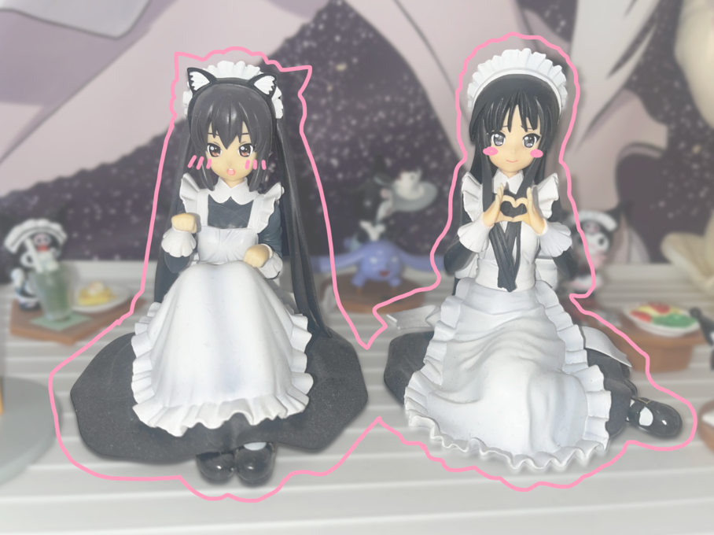

2010년 애니메이션 업계를 주름잡는 미소녀 장르의 등장

세상에는 다양한 미소녀 캐릭터들이 존재합니다. 요즘 미소녀라는 하나의 장르가 생길 정도로 미소녀 캐릭터의 인기는 대단합니다.
2010년에 교토 애니메이션에서 방영된 케이온 이란 애니메이션을 아시나요? 해당 작품은 밴드를 운영하는 다섯명의 소녀의 일상을 그린 작품입니다. 기존 유명했던 다른 애니메이션들의 캐릭터성과 서사에 비해 해당 애니메이션은 그저 미소녀가 출연해서 귀여운 일상을 지내는 작품입니다. 하지만 이 작품은 일본 전역을 휩쓸게 될 정도로 대성하게되었습니다. 이 이후부터 미소녀들이 나와서 그저 일상을 보내기만 하는 장르인 이른바 ‘미소녀 동물원’이라는 장르가 생기게 되었습니다. 이만큼 전 세계에서 미소녀가 가져오는 파급력은 어마어마합니다. 이처럼 미소녀 캐릭터는 단순한 하나의 캐릭터를 넘어 하나의 장르로서 고착되어, 이후로도 많은 유형과 다양한 매력을 가진 캐릭터로 재탄생되고 있습니다. 미소녀 캐릭터의 피규어를 모으는 것은 예전부터 저의 취미였는데, 지금부터 제 컬렉션을 통해서 미소녀 캐릭터에 대한 유형을 고찰해보고자 합니다.